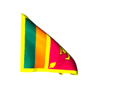
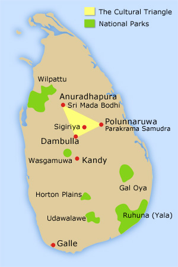
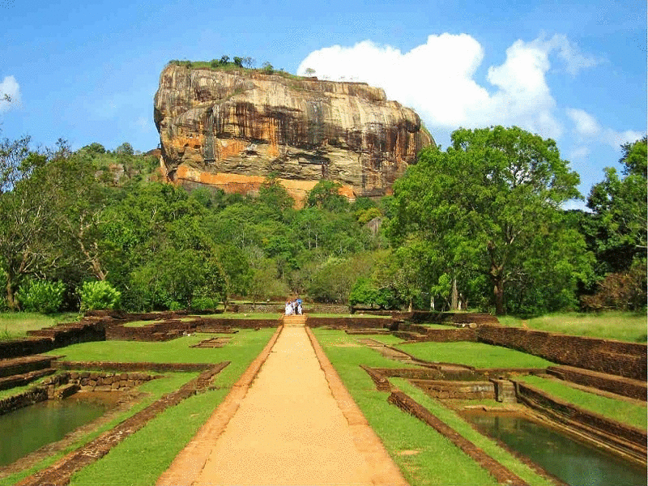

|  |  |
Tourism
Tourism in Sri Lanka is growing rapidly. For centuries, Sri Lanka has been a popular place of attraction for foreign travelers. The famous Chinese traveler Fa-Hien arrived in Sri Lanka in the late 4th century. In the twelfth century, Italian explorer Marco Polo claimed that Sri Lanka to be the "best island of its size in the world".In view of its fascinating scenic beauty and rich cultural heritage, Sri Lanka is one of the best tourist destinations in the world. In 2012, post office worldwide holiday costs barometer named Sri Lanka as the best valued destination for holidays.In 2013 the popular travel guide book Lonely Planet named Sri Lanka as the best travel destination for 2013.According to the Travel and Tourism Competitiveness Report 2015 Sri Lanka is at 63 out of 141 countries
Domestic tourism
There is a significant domestic tourist segment making excursions in Sri Lanka. In 2014 six million Sri Lankans traveled within the country as domestic tourists.The main purposes of travel by the domestic tourists are pilgrimage, family holiday, study works, and sightseeing. The main destinations of domestic tourists are Anuradhapura, Kataragama, Nuwara Eliya, Kandy, Sri Pada, Polonnaruwa, Sigiriya and Dambulla. Domestic tourism is noticeable during school vacations and on weekends.
Places for Tourists |
|
National parks | >>>Sri lanka Tourist Map<<< |
|
   |